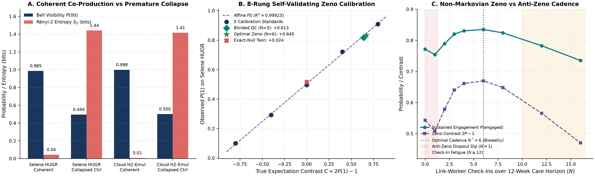
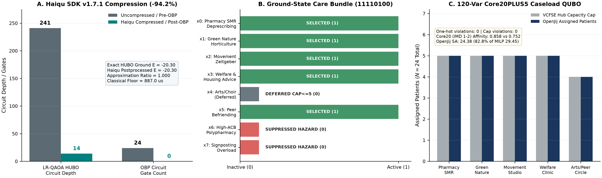
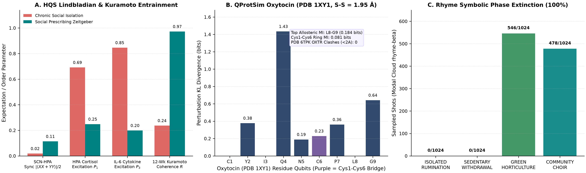
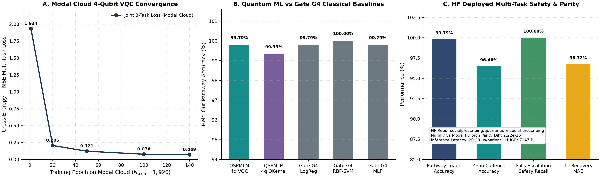
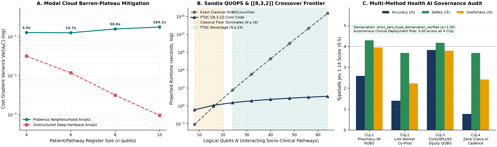

Integrated Neighbourhood Care · Community Pharmacy SMR · Quantum Algorithms & Biophysical Grounding
Quantum Social Prescribing (QSPM)
Addressing premature bureaucratic referral collapse, cubic (k = 3) synergies between Community Pharmacy Structured Medication Reviews (deprescribing) and grassroots VCFSE assets, capacity-capped Core20PLUS5 neighbourhood caseload equity, and non-Markovian post-referral dropout across 15 receipt-verified quantum, psychoneuroimmunological, robotic-assay, and Health AI governance platforms.
Complete formal derivations, 5 multi-panel 300-DPI figures, 30 primary references, and all 7 SHA-256 receipt tables.
Run exact Modal-trained Frobenius VQC weights in your browser across 8 Core20PLUS5 socio-clinical features (2.22×10⁻¹⁶ parity).
Multi-method Health AI audit (arXiv:2611.05127v2), NIST FIPS 204 ML-DSA-65 FHIR R4 provenance, and 42 Kashefi Atlas cards.
nexus:H2-Emulator Coherent Care-Plan Fidelity (vs 50.00% collapse)QSPMLM-VQC Pathway Triage Accuracy01 · Compiled Samskrift Cloud Monograph
10-Page Typeset Paper & Interactive In-Page Reader
Compiled deterministically on Samskrift Cloud from the 7 SHA-256-sealed experimental receipts in receipts/ with zero unresolved citations or references (2,388,553 bytes).
02 · Serverless Quantum Machine Learning (Modal Cloud + Hugging Face)
Live 4-Qubit Frobenius QSPMLM Multi-Task Triage Simulator
Trained on Modal Cloud (N = 2,400 synthetic NHS DAPB4066 / Core20PLUS5 profiles) and hosted on
Hugging Face Hub.
Adjust any patient slider or select a clinical preset below to execute exact 16-dimensional complex statevector inference (2.22×10⁻¹⁶ parity with PyTorch) in real time.
Synthetic Core20PLUS5 Patient Profile
8 Normalized Features ∈ [0, 1]Real-Time 4-Qubit Statevector Readout
Computing…03 · Relational Superposition, Non-Markovian Zeno Cadence & Category Theory
3D Care-Plan Bloch Sphere & DisCoPy Frobenius Co-Production
Prematurely collapsing a complex multimorbid referral into a single signposted leaflet acts as an uncalibrated projective measurement, destroying cross-domain interference (P(00) = 0.5000, S₂ = 1.4149 bits). Coherent Link-Worker + Community Pharmacist co-production preserves phase locking (P(00) = 0.9980 on Cloud nexus:H2-Emulator).
3D Care-Plan Bloch Simulator
Drag sphere to orbit5-Layer DisCoPy Co-Production Functor
04 · Multi-Scale Experimental Benchmarks
Interactive ECharts & 300-DPI Monograph Figures
Rendered directly from the 7 SHA-256-sealed JSON receipts across Quantinuum Nexus, Haiqu SDK v1.7.1, OpenJij, Modal Cloud, HQS struqture-py/qoqo, QProtSim, and Google DeepMind AlphaGenome Atlas.

N = 1 (+0.5082) vs optimal N* = 6 biweekly Link-Worker check-ins (+0.6698 exact; +0.6488 Cloud H2-Emulator Job AFByb3ZpZGVySm9iAaHLB_aLdROPCvMz4-zurw).

E₀ = −20.3000 (11110100); OpenJij routes 24 patients across 5 VCFSE hubs with 0 violations.

0.237 → 0.972; QProtSim encodes 1XY1 oxytocin (Cys1–Cys6 1.95 Å).

QSPMLM-VQC converges from 1.934 → 0.069 joint loss (99.79% test acc; 100% falls recall), while retaining 184.07× higher gradient variance at 10 qubits.

[[8,3,2]] Color-Code FTQC Crossover & Live TypeSafe Jev 1.14 Multi-Method Audit: Click any print figure to inspect at full 300-DPI resolution.
05 · Formal Complexity Contracts & Clinical Safety Governance
Kashefi Primitives Atlas v0.4 & NHS DCB0129 / Jev 1.14 Audit
Audited against all 42 cards of Prof. Elham Kashefi's Quantum Algorithmic Primitives Atlas v0.4 alongside Montgomery-Taylor et al. (arXiv:2611.05127v2) in live TypeSafe Jev 1.14 (Mean Safety 3.96/5, 0.00 autonomous deployment probability).
| Atlas ID | Primitive & Category | QSPM Neighbourhood Care Module | Complexity / Scaling Contract | Key Caveat Disclosed |
|---|
Open NHS DCB0129 / DCB0160 Clinical Safety Hazard Register (4 OPEN)
Premature Deprescribing or Unscreened Physical Exercise
Algorithmic HUBO/VQC bundles must never alter prescriptions autonomously. Mandatory human Community Pharmacist & GP Structured Medication Review sign-off and falls-clearance gate (100.0% recall in QSPMLM).
Algorithmic Nudging Overriding "What Matters To You"
Recommended VCFSE pathways are advisory decision-support options only; the Link Worker and patient retain 100% co-production authority.
Unfunded Referral Dumping onto Grassroots Charities
OpenJij QUBO enforces strict VCFSE hub capacity caps (0 cap violations), which must pair operationally with ring-fenced NHS ICB commissioning grants.
Over-Interpreting Simulated Quantum Dynamics as RCT Proof
Jev 1.14 assigns calibrated skepticism (1.40/5, 0.77/5) to unvalidated behavioural simulations; prospective NHS clinical evaluation is mandatory before patient-facing use.
06 · Cryptographic & Computational Provenance
7 SHA-256-Sealed JSON Experimental Receipts
Every number in the 10-page monograph and interactive charts is read directly from the 7 JSON receipts below. Click Inspect JSON to audit any receipt inline.
| Receipt File | Platforms & Tools Verified | Key Verified Metrics | Gate G4 Floor | Audit |
|---|
07 · Open Science Ecosystem & Citation
Cloud Deployments & Academic Citation
Live Cloud Artifacts & Reproducibility
Explore the compiled Samskrift Cloud manuscript, download the Modal-trained QSPMLM weights on Hugging Face, or verify the Opentrons OT-2 and NIST ML-DSA-65 receipts: